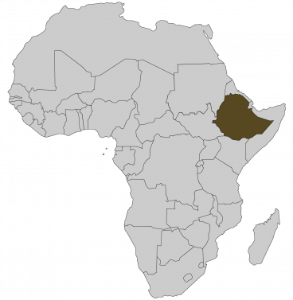

disfrute de una experiencia inolvidable
AMBESSA

Etiopía es un país siuado en África del Este. Cuenta con unos 80 grupos étnicos diferentes. En Etiopía, la cultura tiene una importancia primordial. Esto incluye la preservación del pasado del país y de sus notables lugares, tradiciones y artesanía. Es una tierra de contrastes donde todo se mezcla y contrasta, ofreciéndole mil cosas por descubrir. El evento de AMBESSA rinde homenaje a una riqueza cultural poco conocida pero muy interesante. Por eso nos complace llevarle a un viaje único al primer festival etíope en España.
